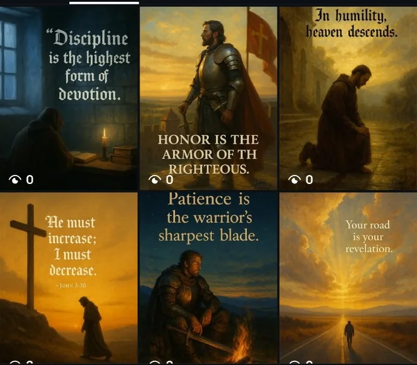

Publishing soon
South African Animals & Biomes
An 82-page Veni Kids colouring and activity adventure.
View book →A clear view of what is publishing soon, active now and still in development.
An 82-page Veni Kids colouring and activity adventure.
View book →
Current events examined through six ideological lenses.
Explore platform →
The first Veni Mythos series, inspired by Daedalus and Icarus.
Enter Nova Gauteng →
Christian encouragement through painterly devotional imagery.
Explore platform →